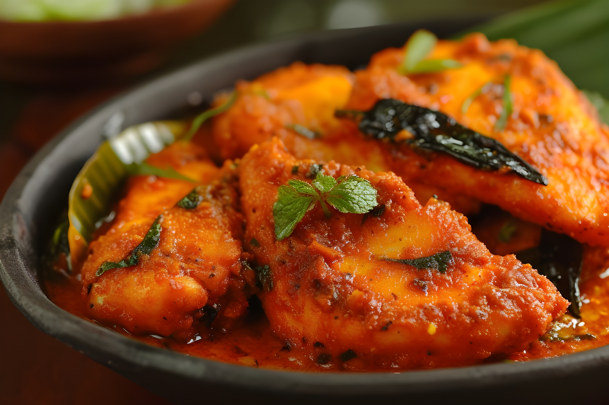
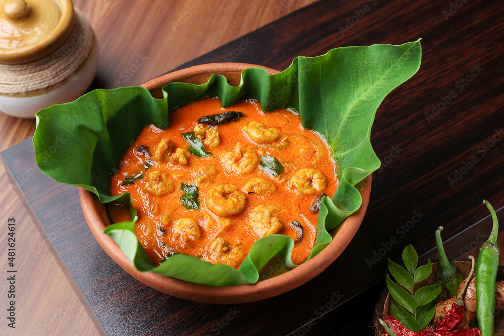
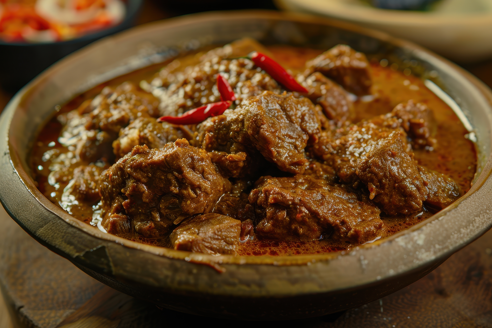

Famous Foods of Goa
Goan Fish Curry

Goan Fish Curry Recipe:
- Ingredients:
- 500 grams fish fillets
- 1 onion, chopped
- 2 tomatoes, chopped
- 1 tablespoon ginger-garlic paste
- 1 tablespoon coconut oil
- 1/2 cup grated coconut
- 1 teaspoon turmeric powder
- 1 teaspoon red chili powder
- 1 teaspoon coriander powder
- 1/2 teaspoon garam masala
- Salt to taste
- 1 cup water
- Instructions:
- Heat oil in a pan and sauté onions until golden brown.
- Add ginger-garlic paste and cook for a minute.
- Add tomatoes, turmeric powder, red chili powder, coriander powder, and salt. Cook until tomatoes are soft.
- Add grated coconut and water. Bring to a boil.
- Add fish fillets and simmer until fish is cooked through.
- Garnish with garam masala and serve hot with rice.
Goan Prawn Balchao

Goan Prawn Balchao Recipe:
- Ingredients:
- 500 grams prawns, peeled and deveined
- 1 onion, finely chopped
- 2 tablespoons Balchao masala (or a mix of red chili powder, turmeric powder, cumin powder)
- 1/4 cup vinegar
- 1/4 cup tomato puree
- 1 tablespoon sugar
- 2 tablespoons oil
- Salt to taste
- Instructions:
- Heat oil in a pan and sauté onions until translucent.
- Add Balchao masala and cook for a minute.
- Add tomato puree, vinegar, and sugar. Cook until the sauce thickens.
- Add prawns and cook until they are cooked through and coated with the sauce.
- Serve hot with rice or bread.
Beef Xacuti

Beef Xacuti Recipe:
- Ingredients:
- 500 grams beef, cut into pieces
- 1 onion, chopped
- 2 tomatoes, chopped
- 1 tablespoon ginger-garlic paste
- 1/2 cup grated coconut
- 1 tablespoon Xacuti masala (or a mix of coriander, cumin, and black pepper)
- 1/2 teaspoon turmeric powder
- 1 teaspoon red chili powder
- 1 cup water
- 2 tablespoons oil
- Salt to taste
- Instructions:
- Heat oil in a pan and sauté onions until golden brown.
- Add ginger-garlic paste and cook for a minute.
- Add tomatoes, turmeric powder, red chili powder, and Xacuti masala. Cook until tomatoes are soft.
- Add beef pieces and cook until browned.
- Add water and simmer until beef is tender and cooked through.
- Serve hot with rice or bread.